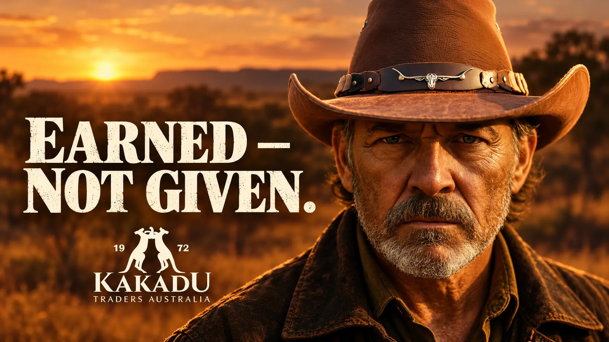

Freedom with weight
Open landscapes and measured pacing create freedom without making it feel weightless or decorative.

A short fashion film for Kakadu, shaped by the frontier: open country, quiet confidence and the freedom to keep moving
Kakadu’s expedition-inspired identity called for more than a product showcase. The film frames clothing as part of a life shaped by distance, dust and self-reliance—where freedom feels lived rather than advertised.
The production explores how AI can replace parts of a traditional advertising pipeline while expanding creative freedom: turning a fully imagined frontier concept into a finished short film with less time and fewer production resources.
Open landscapes and measured pacing create freedom without making it feel weightless or decorative.
The cowboy presence is restrained: strength is communicated through posture, weathered detail and an unhurried gaze.
Wardrobe, texture and environment share one visual language, allowing the brand to live inside the story instead of interrupting it.
I handled the complete creative process, from concept and storyboard to image generation, video generation and the final edit.
The frontier is not given. It is earned
The finished short demonstrates a practical AI-led route from concept to campaign-ready film. The technology reduced production dependence on locations, cast and logistics; the value still came from the idea, visual direction and understanding of the brand’s character.